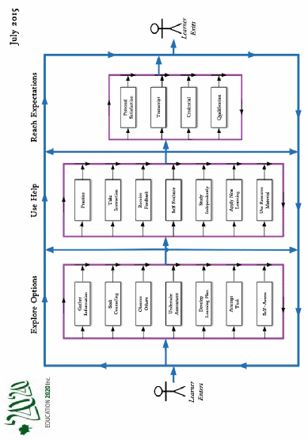
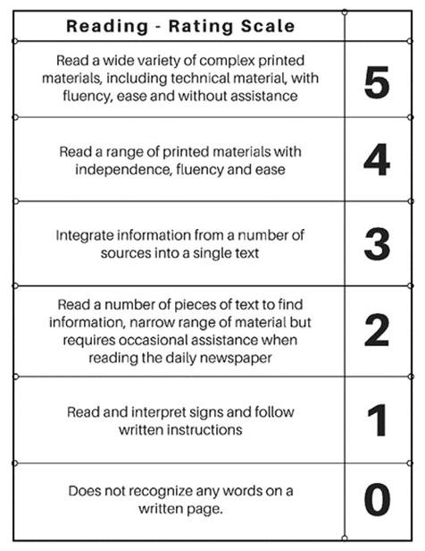

Education 20/20 Inc.
Education 20/20 Inc. is an independent, broad based, national, not-for-profit education organization, located in Charlottetown, PEI and is governed by a volunteer Board of Directors.
Vision: A quality education for every Canadian.
Mission: To support and strengthen a culture of learning for all Canadians.
Mandate: To contribute to the education of our citizens by providing information, encouragement and support for a quality education for all citizens.
Activities:
Monthly electronic newsletter.Website,Occasional papers,
Workshops
Directors:
Don Glendenning, President
Bill Whelan, Vice President
Tom White-Hassler
Katherine McQuaid
Donald DesRoches
Amber Jadis
Anne Miller
Tess Miller
Ronnie McIntosh
Ross Reid
Pub/Bro/Frame/10

AN
EDUCATION
FRAMEWORK
101 Kent St., PO Box 624/rue Kent, BP 624
Charlottetown, PEI C1A 1M0 Canada
Tel: 902-892-2060
CONTENTS
Learner
Road of life
Education
Principles
Learning
Teaching
Functions
A Call to Action
Quality
Rating scale
Learning path
Levels
THIS DOCUMENT
Is a response to growing concern among Islanders about the quality of our educational services.
Helps address the desire of the public for independent information to help with their decision-making.
Grows out of questions and conversations with others who have an interest and concern about the community in which we live and work
Is Intended to provide information, increase interest and provoke debate among ourselves and with educators
Provides space for readers to rreord their notes.
OUR THANKS TO:
THANKS TO
• Louise Carota for her rendition of the road of life
• Cxz for layout and editing
• Sponsors
FURTHER INFORMATION
Adams, Robert E, Lance Hogn and Luke SteinkeDACUM: The Seminal Book,
Hall, Dr. Tom and Don Glendenning, The Canadian Restructured School Plan, (CRSP)
Aitken, William, The Story of the Eight Year Study,
Fadulu, Lolade, “Why is the US so Bad at Worker Retraining”, Atlantic, January 4, 2018
OECD, PISA in Focus, OECD, 20??
Bedard, Mathieu, “ “, Pedagogical Autonom, 2015
UNICEF, The International Working Goup on Education, Florence, Italy, 2000
INNOVATION IN ACTION
Bishop Carrol High School, Calgary – differentiated staffing
Sail Academy, BC – blended learning
Full Service schools, Toronto
Jason Lee Middle School, Tacoma, Washington – individually designrd schedules
Hanover, New Hampshire – democratic management
PROFICIENCY LEVELS
Proficiency levels in a field of study may be attributed to three factors: number of skils that can be demonstrated, levels on skills demonstrated and grouping or clustering of skills demonstated. In siteofthis, however, eductors continue to use years of study in an educational as a proxy for level of education.
Grades - a single division of a school classified by the age of its students; a level of achievement in our public school system’
Graduation - a ceremony marking the end of a programat an educational institution
Diploma - : a document issued by an educational institution indicating that the holder has
completed a program of studies offered by that institution.
Degree- an academic document awarded by a college or university to a student who has completed a course of study as approved by the issuing institution
Qualification - a document attesting to the fact that a person has the issue of attitudes, skills and knowledge required to successfully perform in a role or at a task
Certificate - a formal document which attests to the capabilities of the holder based upon a selected sample of performance.
LEARNING PATH
The larning path below was developed in consultation with a panel of p0osttsecondary students. N late 2015, ucation 20/20 Inc. conveed a panel of students who were questions about their learning experience.The path shown below results from that DICUSSION

THE LEARNER
A learner is a person who, for whatever reason, is trying to bring about change in his/her life - trying to change an attitude, gain new knowledge or add to one’s skills. But learners are neither empty jars nor blank slates; each learner carries three pieces of luggage to every new learning situation:
Certain physical, mental and emotional conditions with which the learn was born.
Prior learning resulting from formal study, home circumstances, travel, state of health, personal interests, culture in which they operate and learning styles
Aspirations and imagined future including where one will live, the work one will do and the lifestyle one will have, the nature of the family, quality of life, etc.
Our future may require a different mix of attitudes, skills and knowledge than the ones we now have; the process of developing the new mix is called learning; the discernable change that occurs in us as a result of learning is education, and people who help us learn are usually called parents, or if they are paid, teachers
Most of us need help in at least some of our new learning experiences; students tell us that they sometimes need:
Information: recent, independent, reliable, timely
Presentation: tutoring, demonstrations, discussion and debate
Feedback: effective, valid, transparent, relevant
Counselling: planning, coaching,
Opportunity: access, time, funding, transportation
Products and technologies: textbooks, references, self-instructional material and assistive technologies
EDUCATION PROVIDERS
Education is a provincial responsibility. For most sectors, Government simply enacts regulatory control or share the offering of services with municipalities, the private sector, commissions or NGO’s. In the case of education, however, PEI actually offer all services directly through people on the government payroll.
Family and friends usually introduce us to mathematics; the nature and extent of that introduction depends, to a large degree, on the interests and capabilities of the home which, it turn have a significant impact on our interest in the subject
The public-school system plays a key role in increasing and formalizing a person’s knowledge of the field. The school system accepts all children and provides math instruction each year until graduation. The process of identifying what will be taught and when is not clear to the writer; the system is limited in its ability to cater to different learning paces (Inflexible schedules) resulting in significant different performance levels among at time of graduation. Student report cards provide limited amount of information of use to postsecondary institutions or employers.
Postsecondary institutions have their own selection process for accepting or rejecting students based on the institution’s judgement of programs offered and proficiency achieved. Current reporting does not provide a profile of skills within the field. UPEI has been experimenting with entrance exams
SkillsPEI is a federally funded agency that purchases training under federal criteria. Instruction may be provided by provincial schools and institutions, by employers and their organizations or NGO’s on behalf of clients. Content is determined or agreed upon at time of purchase.
Private schools offer instruction with content being aligned with the relevant institution or program,
Individuals may improve their math skills on their own or with the help of family, friends, tutors, on line courses and other personal learning strategies but appear to receive limited instructional support nd lack a mechanism for demonstrating their profiviency.
ABOUT EDUCATION
One gains an education through learning; education is the result of any learning experience that has a formative effect n the way a person thinks, fwls or acts.Beelow are a number of beliefs that shape one’s views of education:
All people can learn but some may need more time and assistance than others.
Learning is an individual matter but may occur in a group setting.
The most important part of one’s education is the part that occurs in the first six years of life.
The purpose of education is to help a person gain attitudes, skills and knowledge that will serve them well for the remainder of their life’s journey.
The responsibility for one’s education rests with one’s paents and/or one’s self.
Our future as a community depends, in a large measure, on the nature and level of education of our citizens.
Government’s role is (1) to encourage education among its citizens, (2) to ensure equity in its support and (3) to ensure the existence of skilled workersfor the future of the community it serves.
An education system should be designed to deliver educational services needed its citizens to the extent possible if, as and when needed.
DYNAMIC RATING SCALE

QUALITY
UNICEF date
A quality education system is one where:*
Learners are healthy
Environments are safe and respectful
Content is relevant
Outcomes are linked to personal and community objectives
Support is focused on learners and learning.
Information and advice is timely and independent
Teachers are professional, autonomous and accountable
OECD
The OECD is the conductor of PISA testing; an OECD study ib 2011 of PISA results in 13 countries found that “in countries where schools have greater autonomy ”over what is taught and how students are assessed, students tend t perform better”.
SOME INNOVATIVE SITES
Bishop Carrol High School. Calgary- five pillars
Maple Ridge, BC – testing centre
SAIL Aademy.BC
New Hampshire
A CALL FOR ACTION
On April 9, 2015 , in the mis’t of a Provincial elction, Education 20/20 Inc. issued this Call for Action.
A “clear and compelling” vision of education for all Islanders. We believe that having such a statement is required, especially for a service as large and complex as education
A learner centered service model that provides support in all domains to learners if, as, when and where needed. Doing so would involve student centered outcomes, criterion referenced assessment, flexible scheduling, challenge for credit arrangements, and greater au-tonomy and accountability for teachers.
Leadership in the creation of a learning culture and providing a quality education for every Islander. Government should focus on matters of planning, setting priorities, funding, monitoring, and quality control, ensuring the availability of professional resources, home sup-port for preschool children, information and continuing education.
Autonomy for schools in their day to day decision-making
An independent qualification body for the purpose certifying individual levels of achievement for persons wanting or needing such documentation.
A service delivery model where professionals are directly accountable to clients for the nature, extent and quality of service provided
Put in place an externally controlled strategy to encourage and support innovation.
ROAD OF LIFE
We are all on the road of life; the road is a metaphor for the experiences .one encounters between birth and death.The literature suggests tht, while on the road, each person fills a number of roles, that of an individual, family member, citizen, learner, producer and consumer,
Each of us experiences life our own way and to differing degrees. Differences commonly include:
Timing and extent to which we engage in various life roles or themes that engage us, that of an individual, a family member, a citizen, a student, a consumer and producer.
Natural obstacles, restrictions and hurdles such as time, age, personal and family responsibilities, geography, finance,
Obstacles of resulting from or even compounded and compromised by people we meet along the way.
Obstacles that allow or prohibit access to learning opportunities such as an entrance requirement, a qualification, an age level, physical characteristics, level of education, level of wealth, temperament or a credential.
Personal baggage including what we were born with, what we learned since and our aspirations.
Ach of us couls make our own list of skils that we fel are essential to a successful futre, ll lists, I suggest, would likely include the following:
Literacy
Numeracy
Local Knowledge
Self management
IInterpersonal reltionships
Employmeent entry and
EDUCATION FUNCTIONS
Education is a service industry; the functions of an organization are known to users as servces. While there is no acknowledged standard list, educational sevrices would normally include:
Governance: leadership, funding, quality control, human resources and information and Information,
Instruction: counselling, presentations, practice, diagnosis and access
Quality assurance: evaluation, certification and qualifications
Access: transportation, facilities andinternet
Products and Technology: textbooks, wi-fi, hardware, MOOCS, facilities and software
Information and Counselling: information and counselling, assessment and advocacy
Functions form the basis for:
Departments of Education deciding on the nature and extent of services to be encouraged
Services needed for its own purposes
Services to be provided free of charge,
How, when and where other services will be paid for
CURRICULUM MAP?
Identify field
Some controversy
Analsisi of subject
Or identify skills used by citizens of fielsda of endeavor
Ulimate user is h student
Becones a map of what as been learned as well as what can still be learnes
Counsellinr or carer planning
Curriculum developed for user
End use must be clear
Field should be decided by the community, post sec or
Schoools select what they will teach
Like an area map
US Governors outcomes
Apprenticeship analysis
Not whant can or should be taught
Analysyus by the users of the training product
Current weaknesses – limited to what will be taught